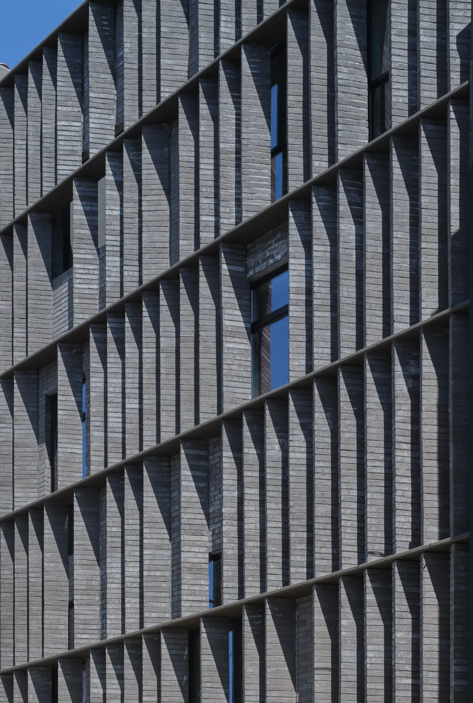
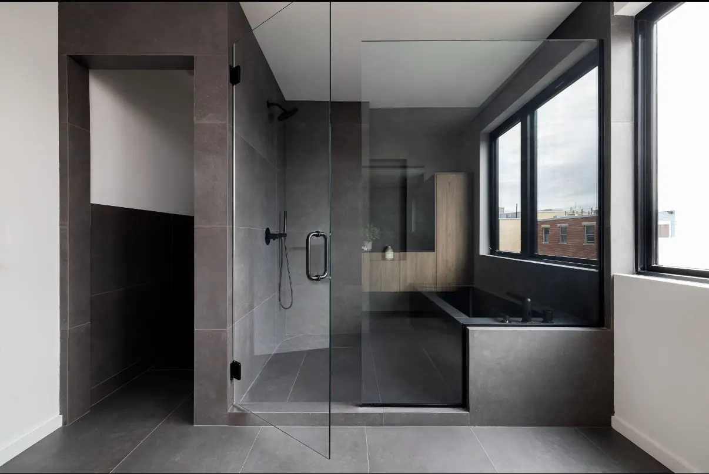
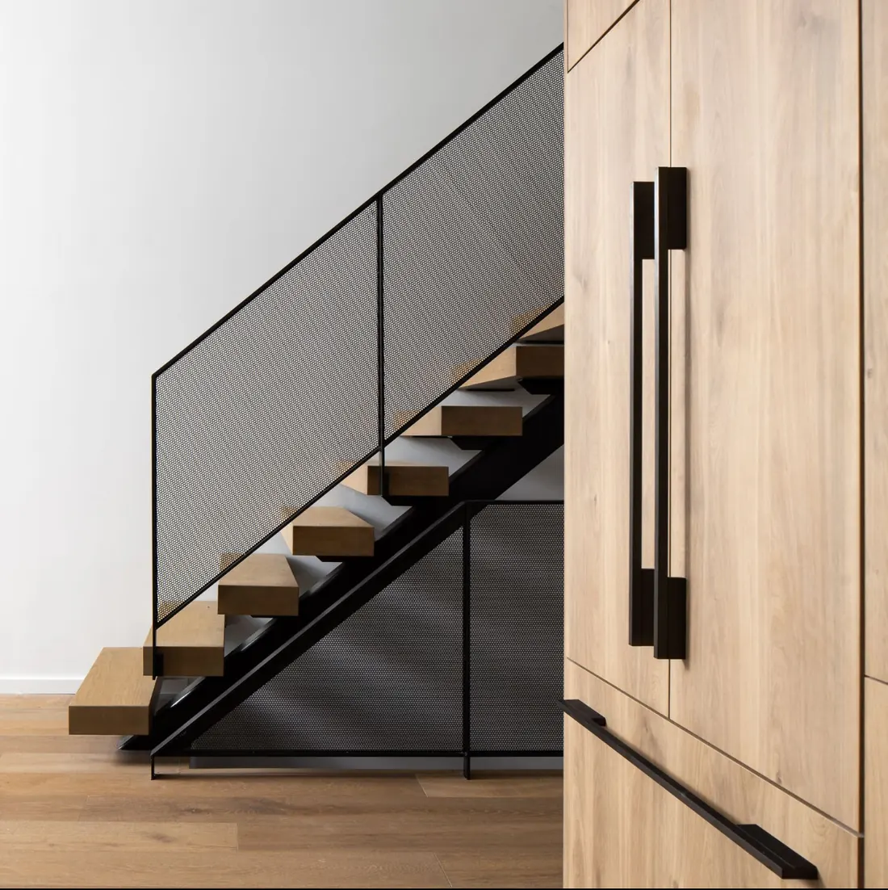
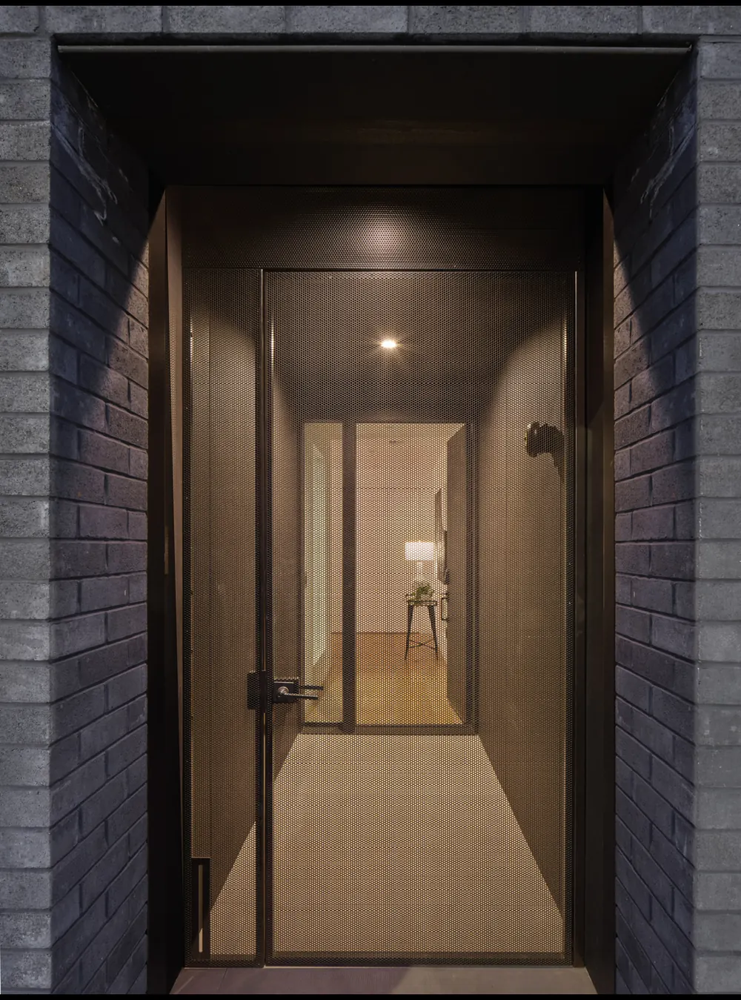

<title>Made Construction</title>
<meta name="claude:viewport-fit-sides" content="cover">
<meta name="robots" content="noindex">
<link rel="preconnect" href="https://fonts.googleapis.com">
<link rel="preconnect" href="https://fonts.gstatic.com" crossorigin>
<link rel="stylesheet" href="https://fonts.googleapis.com/css2?family=Jost:wght@300;400;500&family=Inter:wght@400;500;600&display=swap">
<style>
/* Made Construction: architectural, quiet, built around Jason's own project photos.
   Warm stone paper, near-black ink, oak accent; square edges like the buildings. */
:root{
  --paper:#f2f0eb; --paper2:#e8e5de; --card:#faf9f6; --ink:#141414; --ink2:#3e3d3a; --ink3:#77736b; --line:#d8d4cb;
  --oak:#9b7a52; --dark:#0f0f0f; --dark2:#181818; --dline:#2a2a2a; --dink:#ece9e2; --dink3:#9d998f;
  --disp:"Jost",system-ui,-apple-system,"Segoe UI",sans-serif; --body:"Inter",system-ui,-apple-system,"Segoe UI",sans-serif;
  --ease:cubic-bezier(.2,.7,.2,1); color-scheme:light;
}
*{box-sizing:border-box}
html{scroll-behavior:smooth}
body{background:var(--paper);color:var(--ink);font:400 16.5px/1.65 var(--body);-webkit-font-smoothing:antialiased;overflow-x:clip}
img{display:block;max-width:100%}
a{color:inherit}
p{margin:0}
h1,h2,h3{font-family:var(--disp);font-weight:400;letter-spacing:-.01em;margin:0;text-wrap:balance}
.wrap{width:min(1240px,100%);margin-inline:auto;padding-left:max(20px,env(safe-area-inset-left,0px));padding-right:max(20px,env(safe-area-inset-right,0px))}
.label{display:inline-flex;align-items:center;gap:12px;font:500 11.5px/1.2 var(--body);letter-spacing:.24em;text-transform:uppercase;color:var(--ink3)}
.label::before{content:"";width:28px;height:1px;background:currentColor}
h2{font-size:clamp(2.1rem,4.2vw,3.6rem);line-height:1.06;font-weight:300;margin-top:18px}
h2 b{font-weight:500}

/* draft marker: this is a concept for review, not the live site */
.draft{background:var(--ink);color:#cfcabf;text-align:center;font:500 12px/1.4 var(--body);letter-spacing:.03em;padding:8px 16px}
.draft b{color:#fff;font-weight:600}

/* top bar: the draft note and the nav float over the entrance (light on dark), then turn solid over the page */
.topbar{position:fixed;left:0;right:0;top:0;z-index:50}
.nav{background:color-mix(in srgb,var(--paper) 90%,transparent);-webkit-backdrop-filter:blur(12px);backdrop-filter:blur(12px);border-bottom:1px solid var(--line);transition:background .45s,border-color .45s}
.nav .logo svg path{stroke:var(--paper);transition:stroke .45s}
.nav.over{background:transparent;border-bottom-color:transparent;-webkit-backdrop-filter:none;backdrop-filter:none}
.nav.over .logo{color:#fff}
.nav.over .logo svg path{stroke:#0a0a0a}
.nav.over .logo .wm span{color:rgba(255,255,255,.72)}
.nav.over .links a{color:rgba(255,255,255,.78)}
.nav.over .links a:hover{color:#fff}
.nav.over .btn{background:#fff;border-color:#fff;color:#111!important}
.nav.over .btn:hover{background:transparent;color:#fff!important}
main section[id]{scroll-margin-top:calc(var(--hh,110px) + 10px)}
.nav .wrap{display:flex;align-items:center;justify-content:space-between;height:74px;gap:20px}
.logo{display:flex;align-items:center;gap:13px;text-decoration:none;color:var(--ink)}
.logo svg{width:34px;height:34px;flex:none}
.logo .wm{display:flex;flex-direction:column;line-height:1}
.logo .wm b{font:500 19px/1 var(--disp);letter-spacing:.36em;margin-right:-.36em}
.logo .wm span{font:500 8.4px/1 var(--body);letter-spacing:.43em;margin-top:6px;color:var(--ink2)}
.links{display:flex;align-items:center;gap:30px;font:500 13.5px var(--body)}
.links a{text-decoration:none;color:var(--ink2);transition:color .2s}
.links a:hover{color:var(--ink)}
@media (max-width:860px){.links a:not(.btn){display:none}}

.btn{display:inline-flex;align-items:center;gap:12px;padding:15px 22px;background:var(--ink);color:var(--paper)!important;text-decoration:none;font:500 13.5px/1 var(--body);letter-spacing:.05em;border:1px solid var(--ink);transition:background .25s,color .25s;cursor:pointer}
.btn:hover{background:transparent;color:var(--ink)!important}
.btn.ghost{background:transparent;color:var(--ink)!important}
.btn.ghost:hover{background:var(--ink);color:var(--paper)!important}
.btn .ar{display:inline-block;transition:transform .25s var(--ease)}
.btn:hover .ar{transform:translateX(4px)}
.nav .btn{padding:12px 18px;white-space:nowrap}
@media (max-width:400px){.nav .btn{padding:11px 13px;font-size:12.5px}.logo .wm b{font-size:17px}}

/* ===== the entrance: a wall of black brick fins rises into place, each fin carrying a slice of the logo.
   Scrolling swings the fins open like louvers, middle first, revealing a street of Made homes and then the headline.
   (The fins are the signature facade of M1355.) ===== */
.enter{position:relative;background:#0a0a0a}
.enter.live{height:270vh}
.pin{position:relative;height:100vh;height:100svh;overflow:hidden;background:#0a0a0a}
.enter.live .pin{position:sticky;top:0}
.street{position:absolute;inset:0;display:grid;grid-template-columns:repeat(3,1fr);transform-origin:50% 62%;will-change:transform}
.enter.live .street{transform:scale(1.16);opacity:0;transition:opacity .5s}
.enter.live.ready .street{opacity:1}   /* the homes stay hidden until the wall of fins is complete */
.street div{position:relative;background:#111 center/cover no-repeat}
.street div + div{box-shadow:inset 1px 0 0 rgba(0,0,0,.65)}
.street .s0{display:none;background-image:url(img/fins-street.webp)}
.street .s1{background-image:url(img/fins-tall.webp)}
.street .s2{background-image:url(img/m1712.webp)}
.street .s3{background-image:url(img/m2018.webp)}
.street span{position:absolute;left:20px;top:calc(var(--hh,110px) + 18px);color:#fff;font:500 10.5px var(--body);letter-spacing:.26em;text-transform:uppercase;text-shadow:0 1px 10px rgba(0,0,0,.6);opacity:0;transition:opacity .8s}
.enter:not(.live) .street span,.enter.open .street span{opacity:.92}
@media (max-width:760px){.street{grid-template-columns:1fr}.street .s1,.street .s2,.street .s3{display:none}.street .s0{display:block}}
.shade{position:absolute;inset:0;pointer-events:none;background:linear-gradient(0deg,rgba(8,8,8,.93) 0%,rgba(8,8,8,.58) 38%,rgba(8,8,8,.14) 68%,rgba(8,8,8,.3) 100%)}
.enter.live .shade{opacity:0}
/* the wall is one drawing (SVG): black brick fins, each carrying a slice of the logo, rise into place on load.
   The logo's square mark is cut through the wall as a window: scrolling fades the logo away, the homes show through
   the window between the mark's fins, and the view flies through it until the homes fill the screen. */
.wall{position:absolute;inset:0;width:100%;height:100%;display:block}
.enter:not(.live) .wall{display:none}
.wall .fin{animation:rise 1.2s cubic-bezier(.2,.8,.2,1) calc(.2s + var(--o) * 70ms) both}
@keyframes rise{from{transform:translateY(var(--rise))}to{transform:none}}
.wall .gl{animation:glint 1.3s ease-in-out calc(1.8s + var(--o) * 45ms) both}
@keyframes glint{from{transform:translateX(var(--g0))}to{transform:translateX(var(--g1))}}
.wall.static .fin{animation:none}
.wall.static .gl{display:none}
.wall .logo{opacity:var(--lo,1)}
.cue-wrap{position:absolute;left:0;right:0;bottom:26px;z-index:6;display:flex;justify-content:center;pointer-events:none}
.enter:not(.live) .cue-wrap{display:none}
.cue{display:flex;flex-direction:column;align-items:center;gap:12px;color:#cfcabf;font:500 10.5px var(--body);letter-spacing:.32em;text-transform:uppercase;opacity:0;animation:fadeIn .9s 2.3s forwards}
.cue i{display:block;width:1px;height:46px;background:#cfcabf;transform-origin:top;animation:drip 1.9s 2.6s ease-in-out infinite}
@keyframes fadeIn{to{opacity:1}}
@keyframes drip{0%{transform:scaleY(0);transform-origin:top}45%{transform:scaleY(1);transform-origin:top}55%{transform:scaleY(1);transform-origin:bottom}100%{transform:scaleY(0);transform-origin:bottom}}
.enter-copy{position:absolute;left:0;right:0;bottom:0;z-index:5;will-change:opacity,transform}
.enter.live .enter-copy{opacity:0;transform:translateY(34px)}
.enter-copy .wrap{padding-bottom:clamp(34px,7vh,84px)}
.enter-copy .label{color:#d8d3c8}
.enter-copy h1{color:#fff;font-size:clamp(2.6rem,6.2vw,6rem);line-height:1;font-weight:300;letter-spacing:-.02em;max-width:13ch;margin-top:20px}
.enter-copy h1 b{font-weight:500}
.enter-copy .lede{color:#d4cfc4;max-width:50ch;margin-top:22px;font-size:1.05rem}
.enter-copy .btn{background:#fff;border-color:#fff;color:#111!important}
.enter-copy .btn:hover{background:transparent;color:#fff!important}
.enter-copy .btn.ghost{background:transparent;border-color:rgba(255,255,255,.55);color:#fff!important}
.enter-copy .btn.ghost:hover{background:#fff;color:#111!important}
.ctas{display:flex;flex-wrap:wrap;gap:12px;margin-top:30px}
.cap{position:absolute;left:16px;bottom:14px;color:#fff;font:500 10.5px var(--body);letter-spacing:.22em;text-transform:uppercase;text-shadow:0 1px 10px rgba(0,0,0,.55)}
@media (max-width:760px){.enter.live{height:230vh}.enter-copy .lede{font-size:.98rem}}

/* statement */
.statement{border-top:1px solid var(--line)}
.statement .wrap{display:grid;grid-template-columns:.32fr .68fr;gap:clamp(24px,4vw,64px);padding-block:clamp(80px,10vw,140px)}
.statement p:not(.label){font:300 clamp(1.65rem,3.1vw,2.75rem)/1.24 var(--disp);letter-spacing:-.01em;text-wrap:balance}
.statement p b{font-weight:500}
.statement .label{align-self:start;margin-top:.9em}
@media (max-width:860px){.statement .wrap{grid-template-columns:1fr}}

/* selected work */
.work .wrap{padding-bottom:clamp(60px,8vw,110px)}
.work .head{display:grid;grid-template-columns:1fr 1fr;gap:30px;align-items:end;margin-bottom:clamp(30px,4vw,54px)}
.work .head p{color:var(--ink2);max-width:42ch;justify-self:end}
.proj{display:grid;grid-template-columns:.92fr 1.08fr;gap:clamp(26px,5vw,80px);align-items:center;padding-block:clamp(30px,4vw,54px);border-top:1px solid var(--line)}
.proj:nth-of-type(even){grid-template-columns:1.08fr .92fr}
.proj:nth-of-type(even) .proj-img{order:2}
.proj-img{position:relative;overflow:hidden;aspect-ratio:4/5;background:var(--paper2);margin:0}
.proj-img img{width:100%;height:100%;object-fit:cover;transition:transform 1.2s var(--ease)}
.proj:hover .proj-img img{transform:scale(1.04)}
.code{display:flex;align-items:baseline;gap:16px;font:300 clamp(3.2rem,7vw,6.2rem)/.9 var(--disp);letter-spacing:-.03em}
.code small{font:500 11px var(--body);letter-spacing:.22em;text-transform:uppercase;color:var(--oak)}
.proj h3{font:400 clamp(1.35rem,2vw,1.7rem)/1.25 var(--disp);margin:22px 0 14px;max-width:24ch}
.proj p{color:var(--ink2);max-width:46ch}
.proj dl{display:flex;flex-wrap:wrap;gap:12px 34px;margin:28px 0 0;padding-top:20px;border-top:1px solid var(--line)}
.proj dt{font:500 10.5px var(--body);letter-spacing:.22em;text-transform:uppercase;color:var(--ink3)}
.proj dd{margin:6px 0 0;font:400 .98rem var(--disp)}
@media (max-width:860px){.work .head{grid-template-columns:1fr}.work .head p{justify-self:start}.proj,.proj:nth-of-type(even){grid-template-columns:1fr}.proj:nth-of-type(even) .proj-img{order:0}.proj-img{aspect-ratio:4/4.4}}

/* inside: interiors on black */
.inside{background:var(--dark);color:var(--dink)}
.inside .wrap{padding-block:clamp(80px,10vw,140px)}
.inside .label{color:var(--dink3)}
.inside .head{display:grid;grid-template-columns:1fr 1fr;gap:30px;align-items:end;margin-bottom:clamp(34px,4vw,56px)}
.inside .head p{color:var(--dink3);max-width:40ch;justify-self:end}
.mosaic{columns:3 260px;column-gap:14px}
.mosaic figure{position:relative;margin:0 0 14px;break-inside:avoid;overflow:hidden;background:var(--dark2)}
.mosaic img{width:100%;height:auto;transition:transform 1.2s var(--ease),filter .6s}
.mosaic figure:hover img{transform:scale(1.04)}
.mosaic .cap{opacity:0;transform:translateY(6px);transition:opacity .35s,transform .35s var(--ease)}
.mosaic figure:hover .cap{opacity:1;transform:none}
@media (hover:none){.mosaic .cap{opacity:1;transform:none}}
@media (max-width:640px){.mosaic{columns:2;column-gap:8px}.mosaic figure{margin-bottom:8px}.mosaic .cap{left:10px;bottom:8px;font-size:9px;letter-spacing:.16em}}
@media (max-width:860px){.inside .head{grid-template-columns:1fr}.inside .head p{justify-self:start}}

/* approach */
.approach .wrap{padding-block:clamp(80px,10vw,140px)}
.steps{display:grid;grid-template-columns:repeat(4,1fr);margin-top:clamp(36px,5vw,60px);border-top:1px solid var(--ink)}
.step{padding:28px 26px 8px 0}
.step + .step{padding-left:26px;border-left:1px solid var(--line)}
.step .n{font:300 2.6rem/1 var(--disp);color:var(--oak)}
.step h3{font:500 1.15rem var(--disp);margin:22px 0 10px;letter-spacing:.01em}
.step p{color:var(--ink2);font-size:.95rem}
@media (max-width:960px){.steps{grid-template-columns:1fr 1fr}.step:nth-child(3){padding-left:0;border-left:0}.step:nth-child(n+3){border-top:1px solid var(--line)}}
@media (max-width:560px){.steps{grid-template-columns:1fr}.step,.step + .step{padding:24px 0 6px;border-left:0}.step + .step{border-top:1px solid var(--line)}}

/* founder */
.founder{background:var(--paper2)}
.founder .wrap{display:grid;grid-template-columns:.8fr 1.2fr;gap:clamp(30px,6vw,96px);align-items:center;padding-block:clamp(80px,10vw,140px)}
.portrait{position:relative;margin:0;aspect-ratio:4/5;background:repeating-linear-gradient(90deg,transparent 0 22px,rgba(20,20,20,.045) 22px 24px),var(--card);border:1px solid var(--line);display:grid;place-items:center;text-align:center;color:var(--ink3)}
.portrait span{font:500 11px var(--body);letter-spacing:.22em;text-transform:uppercase;max-width:22ch;line-height:1.7}
.portrait span b{display:block;font:300 1.9rem/1.1 var(--disp);letter-spacing:0;text-transform:none;color:var(--ink);margin-bottom:12px}
.founder h2{margin-top:18px}
.founder .role{margin-top:10px;font:400 1.05rem var(--disp);color:var(--oak)}
.founder .bio{margin-top:26px;display:grid;gap:16px;color:var(--ink2);max-width:58ch}
.founder .ctas{margin-top:32px}
@media (max-width:860px){.founder .wrap{grid-template-columns:1fr}.portrait{max-width:420px;aspect-ratio:4/4.4}}

/* contact */
.contact{background:var(--dark);color:var(--dink)}
.contact .wrap{display:grid;grid-template-columns:1fr 1fr;gap:clamp(30px,6vw,96px);padding-block:clamp(80px,10vw,140px)}
.contact .label{color:var(--dink3)}
.contact h2{color:#fff}
.contact .lede{margin-top:22px;color:var(--dink3);max-width:40ch}
.cinfo{margin-top:36px;display:grid;gap:18px}
.cinfo div{padding-top:16px;border-top:1px solid var(--dline)}
.cinfo dt{font:500 10.5px var(--body);letter-spacing:.22em;text-transform:uppercase;color:var(--dink3)}
.cinfo dd{margin:6px 0 0;font:400 1.08rem var(--disp);color:#fff}
form{display:grid;grid-template-columns:1fr 1fr;gap:16px 18px;align-content:start}
form .full{grid-column:1/-1}
label{display:grid;gap:8px;font:500 10.5px var(--body);letter-spacing:.2em;text-transform:uppercase;color:var(--dink3)}
input,select,textarea{font:400 1rem var(--body);color:#fff;background:transparent;border:0;border-bottom:1px solid #3a3a3a;padding:10px 0 12px;border-radius:0;min-width:0;transition:border-color .25s}
select{appearance:none;background:linear-gradient(45deg,transparent 50%,#9d998f 50%) right 6px top 50%/6px 6px no-repeat,linear-gradient(-45deg,transparent 50%,#9d998f 50%) right 0 top 50%/6px 6px no-repeat}
select option{color:#111}
textarea{min-height:96px;resize:vertical}
input:focus,select:focus,textarea:focus{outline:none;border-bottom-color:#fff}
form .btn{background:#fff;color:#111!important;border-color:#fff;justify-self:start;margin-top:8px}
form .btn:hover{background:transparent;color:#fff!important}
.sent{grid-column:1/-1;color:var(--dink);font-size:.95rem;padding:14px 16px;border:1px solid #3a3a3a}
@media (max-width:860px){.contact .wrap{grid-template-columns:1fr}}
@media (max-width:520px){form{grid-template-columns:1fr}}

footer{background:var(--dark);color:var(--dink3);border-top:1px solid var(--dline)}
footer .wrap{display:flex;flex-wrap:wrap;justify-content:space-between;align-items:center;gap:18px;padding-block:30px;font-size:.85rem}
footer .logo{color:var(--dink)}
footer .logo .wm span{color:var(--dink3)}

/* gentle reveal as sections come into view */
.rv{opacity:0;transform:translateY(22px);transition:opacity .9s var(--ease),transform .9s var(--ease)}
.rv.in{opacity:1;transform:none}
@media (prefers-reduced-motion:reduce){html{scroll-behavior:auto}*{animation:none!important;transition:none!important}.rv{opacity:1;transform:none}}
</style>

<header class="topbar" id="topbar">
  <div class="draft"><b>Draft concept by Ziman Sites</b> · Not the live Made Construction site yet · For review only</div>
  <div class="nav over" id="nav">
    <div class="wrap">
      <a class="logo" href="#top" aria-label="Made Construction home">
        <svg viewBox="0 0 40 40" aria-hidden="true"><rect width="40" height="40" fill="currentColor"/><path d="M10 9v22M17 9v22M24 9v22M31 9v15" stroke="#f2f0eb" stroke-width="3.2"/></svg>
        <span class="wm"><b>MADE</b><span>CONSTRUCTION</span></span>
      </a>
      <nav class="links" aria-label="Main">
        <a href="#work">Work</a><a href="#approach">Approach</a><a href="#founder">About</a>
        <a class="btn" href="#contact">Start a project <span class="ar" aria-hidden="true">→</span></a>
      </nav>
    </div>
  </div>
</header>

<main id="top">
  <section class="enter" id="enter" aria-label="Made Construction">
    <div class="pin">
      <div class="street" aria-hidden="true">
        <div class="s0"><span>M1355 · Philadelphia</span></div>
        <div class="s1"><span>M1355</span></div>
        <div class="s2"><span>M1712</span></div>
        <div class="s3"><span>M2018</span></div>
      </div>
      <div class="shade" aria-hidden="true"></div>
      <svg class="wall" id="wall" aria-hidden="true" preserveAspectRatio="none"></svg>
      <div class="enter-copy">
        <div class="wrap">
          <p class="label">Development · Design · Construction</p>
          <h1>Homes with gravity, presence and <b>timelessness.</b></h1>
          <p class="lede">Made Construction builds one-of-a-kind modern residences in Philadelphia, with acquisitions, finance, development and design handled under one roof.</p>
          <div class="ctas"><a class="btn" href="#work">See the work <span class="ar" aria-hidden="true">→</span></a><a class="btn ghost" href="#contact">Start a project</a></div>
        </div>
      </div>
      <div class="cue-wrap" aria-hidden="true"><div class="cue">Scroll to open<i></i></div></div>
    </div>
  </section>

  <section class="statement">
    <div class="wrap rv">
      <p class="label">Our approach</p>
      <p>Every home is <b>one of a kind:</b> luxury that works for the way people actually live, built from <b>honest materials</b> and precise detail.</p>
    </div>
  </section>

  <section class="work" id="work">
    <div class="wrap">
      <div class="head rv">
        <div><p class="label">Selected work</p><h2>Residential <b>methods.</b></h2></div>
        <p>A selection of residential methods that deliver gravity, presence and timelessness.</p>
      </div>

      <article class="proj rv">
        <figure class="proj-img"><figcaption class="cap">M1355</figcaption></figure>
        <div>
          <div class="code">M1355 <small>Method M13</small></div>
          <h3>Geometric precision and material integrity.</h3>
          <p>A systematic approach to residential design: classical proportions with contemporary execution, creating spaces that honor both tradition and innovation.</p>
          <dl><div><dt>Type</dt><dd>Residential</dd></div><div><dt>City</dt><dd>Philadelphia</dd></div><div><dt>Facade</dt><dd>Brick fins</dd></div></dl>
        </div>
      </article>

      <article class="proj rv">
        <figure class="proj-img"><figcaption class="cap">M1712</figcaption></figure>
        <div>
          <div class="code">M1712 <small>Method M17</small></div>
          <h3>Contemporary brick, traditional technique.</h3>
          <p>An interplay between solid and void: a composition that responds to light and shadow throughout the day.</p>
          <dl><div><dt>Type</dt><dd>Residential</dd></div><div><dt>City</dt><dd>Philadelphia</dd></div><div><dt>Facade</dt><dd>Brick</dd></div></dl>
        </div>
      </article>

      <article class="proj rv">
        <figure class="proj-img"><figcaption class="cap">M2018</figcaption></figure>
        <div>
          <div class="code">M2018 <small>Method M20</small></div>
          <h3>A bold four-story mass in brick.</h3>
          <p>Punched openings set with precision create a dialogue between solid and void, with a strong urban presence that keeps a sense of residential intimacy.</p>
          <dl><div><dt>Type</dt><dd>Residential</dd></div><div><dt>City</dt><dd>Philadelphia</dd></div><div><dt>Stories</dt><dd>Four</dd></div></dl>
        </div>
      </article>
    </div>
  </section>

  <section class="inside">
    <div class="wrap">
      <div class="head rv">
        <div><p class="label">Inside</p><h2>Detail you can <b>feel.</b></h2></div>
        <p>Floating oak stairs, black kitchens and stone-toned baths. Interiors finished with the same discipline as the facades.</p>
      </div>
      <div class="mosaic rv">
        <figure><figcaption class="cap">Kitchen &amp; stair</figcaption></figure>
        <figure><figcaption class="cap">Black &amp; oak kitchen</figcaption></figure>
        <figure><figcaption class="cap">Primary bath</figcaption></figure>
        <figure><figcaption class="cap">Oak &amp; glass stair</figcaption></figure>
        <figure><figcaption class="cap">Entry</figcaption></figure>
        <figure><figcaption class="cap">Kitchen</figcaption></figure>
        <figure><figcaption class="cap">Staircase</figcaption></figure>
        <figure><figcaption class="cap">Living</figcaption></figure>
        <figure><figcaption class="cap">Bath detail</figcaption></figure>
        <figure><figcaption class="cap">Skylight</figcaption></figure>
      </div>
    </div>
  </section>

  <section class="approach" id="approach">
    <div class="wrap">
      <div class="rv"><p class="label">How we work</p><h2>One team, from the <b>first number</b> to the last detail.</h2></div>
      <div class="steps rv">
        <div class="step"><div class="n">01</div><h3>Acquisitions</h3><p>Finding the right lot or building, and seeing what it can become.</p></div>
        <div class="step"><div class="n">02</div><h3>Finance</h3><p>Structuring every project so it works on paper before ground is broken.</p></div>
        <div class="step"><div class="n">03</div><h3>Development</h3><p>Planning, approvals and permits handled in-house, start to finish.</p></div>
        <div class="step"><div class="n">04</div><h3>Design &amp; build</h3><p>Architecture-led construction, finished to a standard that lasts.</p></div>
      </div>
    </div>
  </section>

  <section class="founder" id="founder">
    <div class="wrap">
      <figure class="portrait rv"><span><b>Jason Cutaiar</b>Founder photo goes here</span></figure>
      <div class="rv">
        <p class="label">Founder</p>
        <h2>Jason <b>Cutaiar</b></h2>
        <p class="role">Founder, Made Construction</p>
        <div class="bio">
          <p>Jason Cutaiar founded Made Con, a Philadelphia real estate development and investment firm focused on high-end residential homes. The firm brings acquisitions, finance, development and design together in-house, so every project is shaped by one team from the first number to the final finish.</p>
          <p>His homes are one of a kind by design, pairing luxury with functional, livable plans. To date, the firm has completed over $50 million in high-end residential transactions.</p>
        </div>
        <div class="ctas"><a class="btn" href="#contact">Work with Jason <span class="ar" aria-hidden="true">→</span></a><a class="btn ghost" href="#" target="_blank" rel="noopener">LinkedIn</a></div>
      </div>
    </div>
  </section>

  <section class="contact" id="contact">
    <div class="wrap">
      <div class="rv">
        <p class="label">Start a project</p>
        <h2>Let's build something <b>lasting.</b></h2>
        <p class="lede">Tell us about your property or your plans. We'll get back to you to talk through what's possible.</p>
        <dl class="cinfo">
          <div><dt>Email</dt><dd>info@madeconstruction.com</dd></div>
          <div><dt>Based in</dt><dd>Philadelphia, Pennsylvania</dd></div>
        </dl>
      </div>
      <form id="cf" class="rv" novalidate>
        <label>Name<input name="name" autocomplete="name" required></label>
        <label>Email<input name="email" type="email" autocomplete="email" required></label>
        <label>Phone<input name="phone" type="tel" autocomplete="tel"></label>
        <label>Project<select name="type"><option>New construction</option><option>Renovation</option><option>Development partnership</option><option>Something else</option></select></label>
        <label class="full">About the project<textarea name="msg" placeholder="Location, timing, what you have in mind"></textarea></label>
        <button class="btn" type="submit">Send inquiry <span class="ar" aria-hidden="true">→</span></button>
        <p class="sent" id="sent" hidden>Thank you. This is a draft, so nothing was sent; on the live site this goes straight to Made Construction.</p>
      </form>
    </div>
  </section>
</main>

<footer>
  <div class="wrap">
    <a class="logo" href="#top" aria-label="Made Construction home">
      <svg viewBox="0 0 40 40" aria-hidden="true"><rect width="40" height="40" fill="currentColor"/><path d="M10 9v22M17 9v22M24 9v22M31 9v15" stroke="#0f0f0f" stroke-width="3.2"/></svg>
      <span class="wm"><b>MADE</b><span>CONSTRUCTION</span></span>
    </a>
    <span>© 2026 Made Construction · Philadelphia, PA</span>
  </div>
</footer>

<script>
(() => {
  const topbar = document.getElementById('topbar'), nav = document.getElementById('nav');
  const setHH = () => document.documentElement.style.setProperty('--hh', topbar.offsetHeight + 'px');
  setHH(); addEventListener('resize', setHH);

  // the entrance: a wall of black brick fins rises in, each fin carrying a slice of the logo. Scrolling fades the logo,
  // its square mark becomes a window onto the homes, and the view flies through the window between two of its fins.
  const stage = document.getElementById('enter'), wall = document.getElementById('wall'), pin = wall.parentElement;
  const street = stage.querySelector('.street'), shade = stage.querySelector('.shade'), copy = stage.querySelector('.enter-copy'), cue = stage.querySelector('.cue-wrap');
  const clamp = v => Math.max(0, Math.min(1, v)), ease = t => t < .5 ? 4 * t * t * t : 1 - Math.pow(-2 * t + 2, 3) / 2;
  const lim = (v, a, b) => Math.max(a, Math.min(b, v));
  const reduce = matchMedia('(prefers-reduced-motion: reduce)').matches;
  let W = 0, H = 0, N = 0, zoom = null, gap = [0, 0], raf = 0, built = false;
  const frame = () => {
    raf = 0;
    const r = stage.getBoundingClientRect();
    nav.classList.toggle('over', r.bottom > topbar.offsetHeight + 2);
    if (reduce || !zoom) return;
    const p = clamp(-r.top / Math.max(1, r.height - innerHeight));
    if (p > .005) stage.classList.add('ready');                    // scrolling early still shows the homes in the window
    wall.style.setProperty('--lo', (1 - clamp(p / .12)).toFixed(3));   // 1) the logo fades; its mark is left as a window
    const z = ease(clamp((p - .1) / .5));                            // 2) fly through the window, between two of its fins
    const s = Math.pow(240, z), tx = gap[0] + (W / 2 - gap[0]) * z, ty = gap[1] + (H / 2 - gap[1]) * z;
    zoom.setAttribute('transform', `translate(${tx.toFixed(2)} ${ty.toFixed(2)}) scale(${s.toFixed(4)}) translate(${(-gap[0]).toFixed(2)} ${(-gap[1]).toFixed(2)})`);
    wall.style.opacity = (1 - clamp((p - .56) / .06)).toFixed(3);
    wall.style.visibility = p > .62 ? 'hidden' : '';
    street.style.transform = `scale(${(1.25 - .25 * z).toFixed(4)})`;
    shade.style.opacity = clamp((p - .5) / .15).toFixed(3);
    const k = ease(clamp((p - .64) / .22));                          // 3) the headline, once the homes fill the screen
    copy.style.opacity = k.toFixed(3); copy.style.transform = `translateY(${((1 - k) * 34).toFixed(1)}px)`;
    copy.style.pointerEvents = k > .5 ? '' : 'none';
    cue.style.opacity = (1 - clamp(p / .07)).toFixed(3);
    stage.classList.toggle('open', p > .64);
  };
  const build = () => {
    const w = pin.clientWidth, h = pin.clientHeight, n = w < 760 ? 7 : 13;
    if (Math.abs(w - W) < 2 && Math.abs(h - H) < 2 && n === N) return;
    W = w; H = h; N = n; const sw = W / N;
    // the logo, laid out like the page's type: mark, MADE, CONSTRUCTION, centred on the screen
    const ms = lim(W * .065, 54, 92), fs = lim(W * .145, 57.6, 216), sm = lim(W * .0115, 10.56, 15.2);
    const g1 = lim(H * .03, 18, 32), g2 = lim(H * .024, 14, 26), capH = fs * .7;
    const mx = (W - ms) / 2, my = (H - (ms + g1 + capH + g2 + sm * .72)) / 2;
    const base1 = my + ms + g1 + capH, base2 = base1 + g2 + sm * .72, u = ms / 40;
    const bars = [10, 17, 24, 31].map(b => `M${(mx + b * u).toFixed(2)} ${(my + 9 * u).toFixed(2)}V${(my + (b === 31 ? 24 : 31) * u).toFixed(2)}`).join('');
    gap = [mx + 20.5 * u, my + 20 * u];                              // the middle of the gap between the mark's 2nd and 3rd fins
    const ls1 = fs * .28, ls2 = sm * .78, bw = (3.2 * u).toFixed(2), fw = (sw + .6).toFixed(2);
    const logo = `<g class="logo"><rect x="${mx}" y="${my}" width="${ms}" height="${ms}" fill="#efebe3"/><path d="${bars}" stroke="#0a0a0a" stroke-width="${bw}"/>`
      + `<text x="${W / 2 + ls1 / 2}" y="${base1}" text-anchor="middle" fill="#efebe3" style="font:500 ${fs.toFixed(1)}px Jost,system-ui,sans-serif;letter-spacing:${ls1.toFixed(2)}px">MADE</text>`
      + `<text x="${W / 2 + ls2 / 2}" y="${base2}" text-anchor="middle" fill="#bcb7ac" style="font:500 ${sm.toFixed(2)}px Inter,system-ui,sans-serif;letter-spacing:${ls2.toFixed(2)}px">CONSTRUCTION</text></g>`;
    let clips = '', fins = '';
    for (let i = 0; i < N; i++) {
      const x = (i * sw).toFixed(2);
      clips += `<clipPath id="c${i}"><rect x="${x}" y="0" width="${fw}" height="${H}"/></clipPath>`;
      fins += `<g class="fin" clip-path="url(#c${i})" style="--o:${i};--rise:${(H * 1.02).toFixed(1)}px">`
        + `<rect x="${x}" y="0" width="${fw}" height="${H}" fill="url(#finG)" mask="url(#win)"/>${logo}`
        + `<rect class="gl" x="${x}" y="0" width="${fw}" height="${H}" fill="url(#glG)" style="--o:${i};--g0:${(-sw * 1.3).toFixed(1)}px;--g1:${(sw * 1.3).toFixed(1)}px"/></g>`;
    }
    wall.setAttribute('viewBox', `0 0 ${W} ${H}`);
    wall.innerHTML = '<defs>'
      + '<linearGradient id="finG" x1="0" x2="1" y1="0" y2="0"><stop offset="0" stop-color="#0b0b0b"/><stop offset=".44" stop-color="#181817"/><stop offset=".52" stop-color="#232322"/><stop offset="1" stop-color="#0d0d0d"/></linearGradient>'
      + '<linearGradient id="glG" x1="0" x2="1" y1="0" y2="0"><stop offset=".25" stop-color="#fff" stop-opacity="0"/><stop offset=".5" stop-color="#fff" stop-opacity=".11"/><stop offset=".75" stop-color="#fff" stop-opacity="0"/></linearGradient>'
      + `<mask id="win" maskUnits="userSpaceOnUse" x="0" y="0" width="${W}" height="${H}"><rect width="${W}" height="${H}" fill="#fff"/>`
      + `<g id="zoom"><rect x="${mx}" y="${my}" width="${ms}" height="${ms}" fill="#000"/><path d="${bars}" stroke="#fff" stroke-width="${bw}"/></g></mask>`
      + clips + '</defs>' + fins;
    if (built) wall.classList.add('static');                         // a resize redraws the wall without replaying the rise
    zoom = wall.querySelector('#zoom'); frame();
  };
  if (!reduce) { stage.classList.add('live'); build(); built = true; addEventListener('resize', () => { build(); frame(); });
    setTimeout(() => stage.classList.add('ready'), 2300); }         // the last fin finishes rising at about 2.2 s
  addEventListener('scroll', () => { if (!raf) raf = requestAnimationFrame(frame); }, { passive: true });
  frame();
  // sections ease in as they come into view
  const io = new IntersectionObserver(es => es.forEach(e => { if (e.isIntersecting) { e.target.classList.add('in'); io.unobserve(e.target); } }), { rootMargin: '0px 0px -8% 0px' });
  document.querySelectorAll('.rv').forEach(el => io.observe(el));
  // draft form: check the two required fields, then show the note (nothing is sent)
  document.getElementById('cf').addEventListener('submit', e => {
    e.preventDefault();
    for (const el of e.target.querySelectorAll('[required]')) { if (!el.value.trim()) { el.focus(); return; } }
    document.getElementById('sent').hidden = false;
  });
})();
</script>
